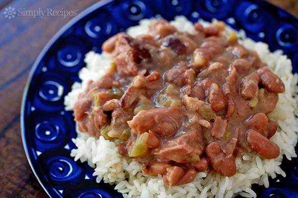

Red Beans

Description
Red beans and rice is a Louisiana staple. It consists of red beans, rice, sausage, onion, peppers, celery, and seasonings.
The best part of red beans and rice, next to eating it, is the process of making it. It's not as enjoyable as making a roux for gumbo, but it is still an enjoyable cooking experience.
Ingredients
- 1 package Camellia's Red Beans
- 1 pound smoked sausage, sliced
- 8-10 cups water
- quarter stick of butter
- 2 cups chopped seasoning blend(onions, celery, green bell peppers, parsley flakes)
- 1 toe garlic, chopped
- 1 bay leaf
- Salt to taste
- Pepper to taste
- Cajun seasoning to taste
- Hot cooked rice
Steps
- Rinse and sort red kidney beans.
- In large heaby pot, cook sliced sausage for 5 minutes
- Add chopped seasoning blend and garlic to cooked sausage, along with 1/4 stick butter, and continue to cook until onions turn soft and clear
- Add beans, water, and bay leaf
- Bring to rolling boil for 30 minutes, stirring every 10 minutes
- Reduce heat, simmer for 1-2 hours, stirring occasionally, until beans are desired tenderness
- Add Cajun seasoning plus salt and pepper to taste.
- Serve over hot cooked rice.